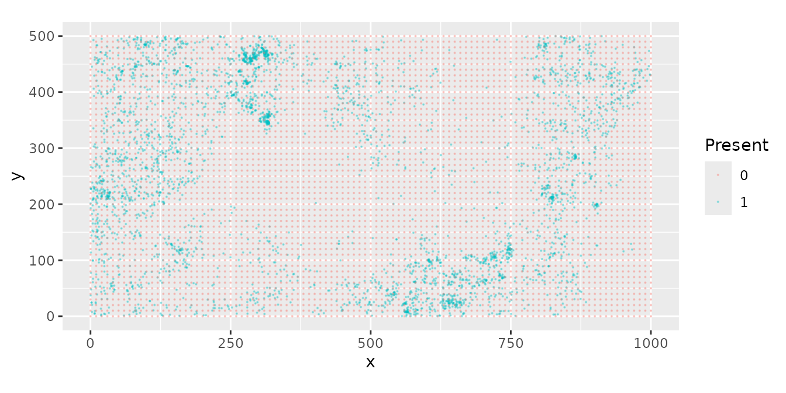
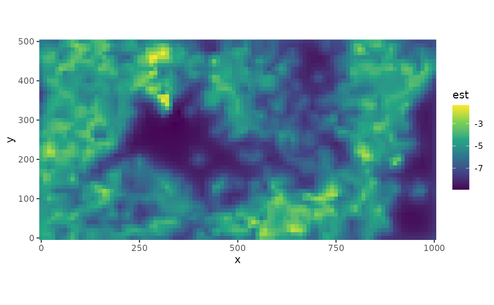

Spatial Modeling of Presence-Only Data with sdmTMB
Julia Indivero, Sean Anderson, Lewis Barnett, Philina English, Eric Ward, Jim Thorson
2025-11-22
Source:vignettes/articles/presence-only.Rmd
presence-only.RmdWhile some geostatistical datasets contain information on presences and absences of species, others only include only locations where presence is observed. While presence-only modelling is commonly used in ecology and fisheries, there are also applications in other fields (e.g. dynamics of rare diseases). There are several approaches for analyzing these types of data—we illustrate two applications below, and in both utilize simulated zeros (pseudo-absences).
By adding pseudo-absences to presence-only data, we can estimate a spatial range that isn’t sensitive to choice of raster or lattice resolution.
As an example dataset, we will use data on the locations of 3605 trees (species Beilschmiedia pendula) in a tropical rainforest from the spatst.data package
Data
Presence data
These data come from the spatstat package, and consist
of point locations of 3605 trees on Barro Colorado Island (Panama). From
spatstat, the data files kindly supplied by Rasmus
Waagepetersen
The data are stored in the bei dataframe,
dat <- data.frame(
x = spatstat.data::bei$x,
y = spatstat.data::bei$y
)The distribution of trees is obviously not uniform and the middle of the map has very few trees.

Generate pseudo-absences
There are several approaches to generating pseudo-absences from these data. We first use a method called quadrature points (Renner et al. 2015). For this method, we have to decide:
- Distribution of zeroes
- Regularly spaced (e.g. on a grid or lattice?)
- Random
- Higher density where environmental variability is high (suggestion by Renner et al. 2015)
- How many zeroes to generate?
- Large enough so that predictive performance does not change as more are added
Here, we will use a uniform grid strategy to create ~5000 points. To
test whether the number of pseudo-absences is sufficient,
res can be decreased, and model performance can be
compared. For instance, to increase the number of pseudo-absences to
~20,000 points, we could change res <- 5. In this
example, increasing the number of zeroes to ~20,000 only marginally
improves model performance, so 5,000 zeroes is sufficient.
res <- 10 # Determines resolution: lower value will increase number of zeroes generated
# zeros is generated on a grid for this example, but other strategies could be used
zeros <- expand.grid(
x = seq(0, 1000, by = res),
y = seq(0, 500, by = res)
)Then, we combine the presence and pseudo-absence data, and use
$present to separate occurrences from pseudo-absences.
dat$present <- 1
zeros$present <- 0
all_dat <- rbind(dat, zeros)Next we can create the mesh. The resolution of mesh can be changed
with the cutoff value, which determines the minimum
distance between locations in X-Y units. Increasing the cutoff will
decrease the resolution of the mesh. In this example, a higher
resolution mesh of cutoff=15 marginally improved model
performance over cutoff=25.
mesh <- make_mesh(
all_dat,
xy_cols = c("x", "y"),
cutoff = 15 # min. distance between knots in X-Y units
)The dimensions of the mesh (or number of vertices or knots) can be
accessed with mesh$mesh$n. A cutoff distance of 15 yields ~
1399 knots, and a cutoff distance of 25 yields a mesh with 624
knots.
In the following plot, blue dots are data and red grid dots are quadrature points.

Model Options
1) Infinitely Weighted Logistic Regression (IWLR) and sdmTMB
Several approaches exist for estimating a model with pseudo-absences. These are similar, but have different likelihood models. First, we can use an Infinitely Weighted Logistic Regression Fithian & Hastie (2013) for the model.
The first step is to calculate weights. Weights will be 1 for true
occurrences and a very large number (nW) for
pseudo-absences.
nW <- 1.0e6
all_dat$wt <- nW^(1 - all_dat$present)And use sdmTMB to fit the model.
fit <- sdmTMB(
present ~ 1,
data = all_dat,
mesh = mesh,
family = binomial(link = "logit"),
weights = all_dat$wt
)We can inspect the model output.
summary(fit)
#> Spatial model fit by ML ['sdmTMB']
#> Formula: present ~ 1
#> Mesh: mesh (isotropic covariance)
#> Data: all_dat
#> Family: binomial(link = 'logit')
#>
#> Conditional model:
#> coef.est coef.se
#> (Intercept) -15.5 0.17
#>
#> Matérn range: 57.49
#> Spatial SD: 1.73
#> ML criterion at convergence: 52267.406
#>
#> See ?tidy.sdmTMB to extract these values as a data frame.A criticism of this approach is that the intercept and log-likelihood
can be affected by nW (Renner et
al. 2015)
2) Downweighted Poisson Regression (DWPR)
Another option is the Downweighted Poisson Regression, which is similar to IWLR but uses different weights and doesn’t have the same arbitrary effects on intercept and likelihood
First we re-calculate weights (note they’re different than IWLR):
# small values at presence locations
all_dat$wt <- 1e-6
# pseudo-absences: area per quadrature point
tot_area <- diff(range(dat$x)) * diff(range(dat$y))
n_zeros <- length(which(all_dat$present == 0))
all_dat$wt <- ifelse(all_dat$present == 1,
1e-6, tot_area / n_zeros
)Then fit the model with the new weights and a Poisson distribution
fit <- sdmTMB(
present / wt ~ 1,
data = all_dat,
mesh = mesh,
family = poisson(link = "log"),
weights = all_dat$wt
)And inspect the output
summary(fit)
#> Spatial model fit by ML ['sdmTMB']
#> Formula: present/wt ~ 1
#> Mesh: mesh (isotropic covariance)
#> Data: all_dat
#> Family: poisson(link = 'log')
#>
#> Conditional model:
#> coef.est coef.se
#> (Intercept) -6.26 0.17
#>
#> Matérn range: 57.49
#> Spatial SD: 1.73
#> ML criterion at convergence: 65147.461
#>
#> See ?tidy.sdmTMB to extract these values as a data frame.We can plot the random spatial effects

We can predict spatial distribution both in link (log) space:

Or natural space:

To evaluate the predictive performance, there are multiple options for binary data. AUC (Area Under the receiver operating characteristic curve) is a common metric, where values near 0.5 are essentially random, and values close to 1 indicate better predictive performance. We can use the package ROCR.